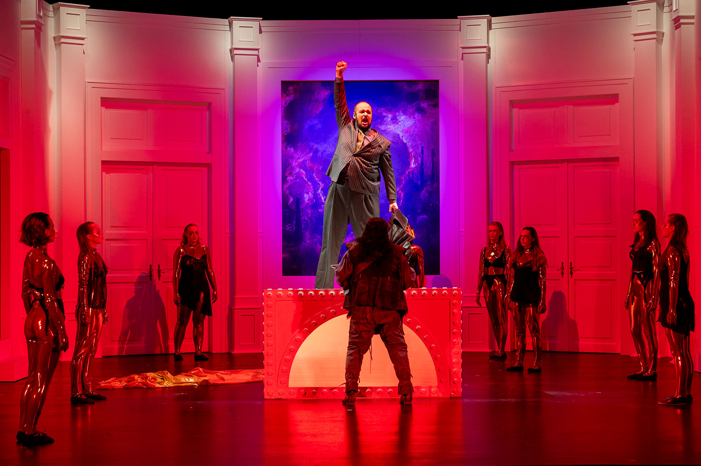

Hear Me Sing
Featured

La Bohème (Puccini): Abasso, abasso l'autor
Samuel Berlad as Schaunard in Puccini's La Bohème • Live performance from the Haifa Performing Arts Center (Dec 2021).

Die tote Stadt (Korngold): Mein Sehnen, mein Wähnen
Concert performance with the Haifa Symphony Orchestra during the 2020 lockdown season • A lyrical, introspective aria from Korngold’s Die tote Stadt.

Das Rheingold (Wagner): Bin ich nun frei
Samuel Berlad as Alberich in Wagner’s Das Rheingold • Live stage recording from Harztheater Season 2023/24.
This dramatic excerpt is not publicly available due to licensing restrictions. Please contact me to request access.
This dramatic excerpt is not publicly available due to licensing restrictions. Please contact me to request access.

Kel Male Rachamim – Yad Vashem (2022)
Samuel Berlad sings the Jewish memorial prayer Kel Male Rachamim during U.S. President Joe Biden’s official visit to Yad Vashem • Broadcast live worldwide in July 2022.

Schubert: Erlkönig
Live Lieder performance with Ido Ariel from the Israel Schubertiade (Jerusalem, Jan 2021) • A dramatic and vocally demanding setting of Goethe’s famous ballad.

Schubert: Die Forelle
Samuel Berlad and Ido Ariel perform Schubert’s cheerful art song Die Forelle • Live from the Israel Schubertiade (Jerusalem, Jan 2021).
Don Giovanni (Mozart): Madamina, il catalogo è questo
Leporello's Catalogue Aria from Mozart's Don Giovanni • Archival live audio recording from Tel Aviv (Dec 2018).